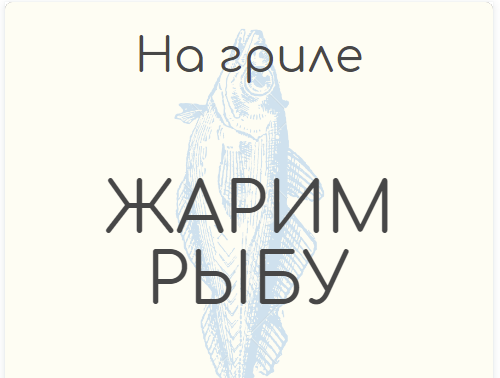

Лучшие заголовки статей
Один из самых важных навыков для дизайнера — это умение выбирать типографику, пишет Джонатан. Ведь текст — один из основных способов коммуникации дизайнера с пользователями. И типографика может как улучшить дизайн, так и сломать его.
Типографика одновременно сложна и прекрасна. Некоторые люди посвящают ей всю свою карьеру. К счастью, их работа хорошо задокументирована, так что у нас есть множество типографических онлайн-ресурсов.
Прежде всего нужно понять, в чем цель вашего дизайна. Какую информацию вы хотите донести? С помощью чего? В хорошем дизайне типографика соответствует цели. Это связано с тем, что типографика — ключевой фактор в создании настроения, тона и стиля дизайна.
Соотношение кегля заголовка и текста
Пример: у нас есть размер основного шрифта – 16pt и мы хотим подобрать размер для подзаголовка. В таком случае просто умножаем 16 на 1,6 и при необходимости округляем до целочисленного значения. Получаем подзаголовок размером 22pt. Чтобы достигнуть баланса между текстом и «воздухом», сделайте межстрочное расстояние примерно в полтора раза больше высоты строчных букв. Или устанавливаем интерлиньяж, равный 150% размера шрифта. Например, размер текста 14 px, тогда интрерлиньяж — 21 px.
Что такое тег H1 и теги заголовков
Тег H1 и H2 и далее до H6 — это HTML теги, в которые заключается текст статьи или иного материала на сайте для того, чтобы обозначить его в качестве заголовка. Иерархия устанавливается от меньшего к большему: заголовок H1 — верхний, и так далее по уровням вложенности. Html тег H1 — самый заметный, он рассказывает, о чём эта страница. В отличие от мета-тегов, таких как Title, Description и других, каждый тег заголовка предназначен для пользователей и виден для них.
Не пользуйтесь плохими шрифтами. Есть много хороших и достойных шрифтов.
Декоративный заголовок
Здесь плохой шрифт мы будем перечёркивать, а хороший улучшать.
Красивый заголовок с красивой тенью
Статья посвящена актуальной проблеме в области исследования современной философской антропологии. Авторы сделали попытку показать, как проявляется и работает Тень, как человек относится к ней, что дает работа с ней и можно ли посредством работы с Тенью достичь позитивного развития личности. Тень в рассмотренных художественных произведениях это антипод, антагонист, антигерой главного персонажа. Но человек и Тень неразделимы, нельзя просто подавить или удалить теневую, дурную сторону личности. Для того чтобы подняться в собственном развитии, человек должен осознать свою отрицательную, темную сторону, встретиться с собственной Тенью. Таким образом, через осознание своего несовершенства человек идет к совершенствованию.